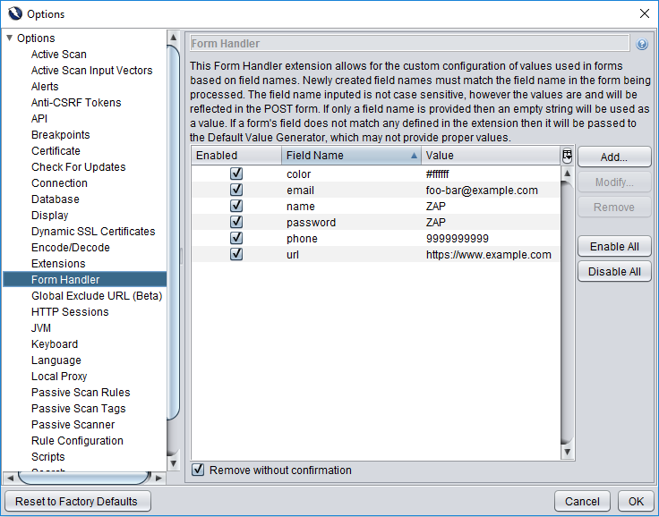
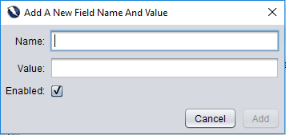

Pinahihintulutan ng extension na Handler na ito ang custom na configuration ng mga halaga na ginagamit sa mga form batay sa mga pangalan ng field.
Sa add-on na ito ang user ay maaaring lumikha ng mga bagong field para sa bawat indibidwal na field na nais nilang itakda ang halaga ng. Bukod pa rito, maaaring baguhin ng user ang anumang pangalan at halaga ng anumang umiiral na patlang upang umangkop sa patlang na sinusubukan nilang itakda. Ang anumang field ay maaari ring hindi paganahin o alisin ng user upang ang mga pasadyang halaga ay hindi ginagamit. . Ang mga pangalan ng patlang, mga halaga at katayuan ng pinagana ay maiimbak kahit na matapos ang isang sesyon ng ZAP.
Ang add-on ay nagbibigay ng isang hanay ng mga default na mga pangalan ng patlang na maaaring matagpuan sa isang form at isang katumbas na halaga para sa bawat default na field. . Ang mga default na halaga ay maaaring hindi paganahin, mabago at matatanggal kung nais ng user.
The Form Handler can be found in the Options. Selecting the Form Handler tab will display a table with all existing values that are currently defined. An example is shown below.
To define additional field values the Add button can be clicked. This will bring up a dialog for the user to provide field information.
Please take note of the following when adding a new field:
The extension allows the user to modify the values and names of existing fields. This can be done by selecting the field that you wish to modify and clicking on the Modify button.

When modifying a field the user is constrained by the same rules as creating a new one. The most common constraint when modifying a field is that the name cannot be the same as an existing field. (i.e. No duplicate fields)
The user can remove fields at any time. To do so simply select the field that you wish to remove and click on the Remove button. Please note that you will be prompted to confirm removal before proceeding unless the Remove without Confirmation box is checked.
A user may find that they do not want to define every field in a form, but rather define a select few within the form.
Any field that is not defined in the form handler add-on will use a ZAP default value that is generated to match each field type.(For example: A text field will have the value "ZAP")